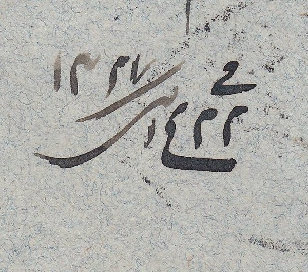
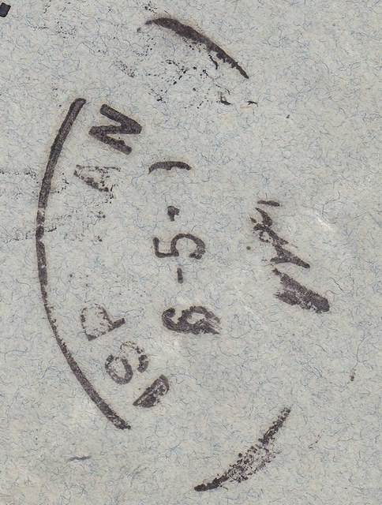
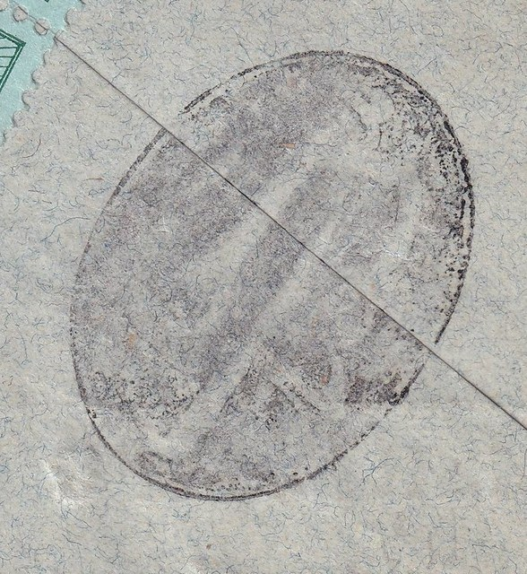
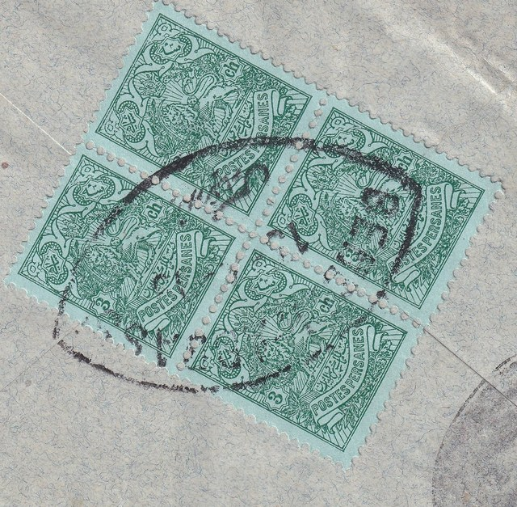
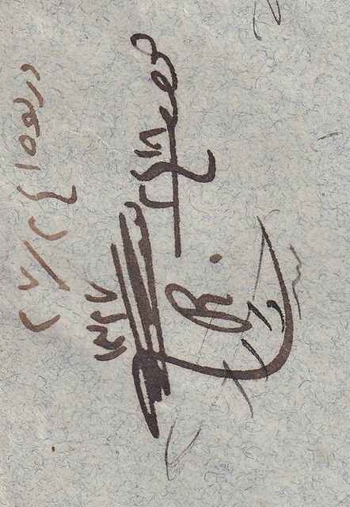

1Manuscript date
۲۲ ربیعالاول ۱۳۲۷, 22 Rabi al-Awwal 1327 (13 April 1909).
بندرعباس به اصفهان
Sent to the merchants Khusrow Shah Jehan & Brothers in Isfahan during the Minor Tyranny, and sealed on the back by the Bandar Abbas nationalists.

۲۲ ربیعالاول ۱۳۲۷, 22 Rabi al-Awwal 1327 (13 April 1909).

ISPAHAN receiving postmark, 6 May 1909.

The large oval mark of the Bandar Abbas nationalists, ملت بندرعباس, struck in black over the flap.

A block of four 3 chahi Lion stamps, tied by the Bandar Abbas departure postmark.

The recipient’s manuscript note of arrival, dated 1327.